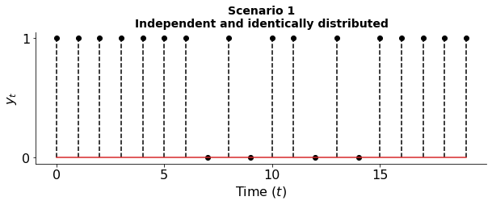

#### Probably approximately correct in the future:<br> "Prospective Learning" <br><br> Joshua T. Vogelstein <br> <!-- , [JHU](https://www.jhu.edu/) <br> --> <!-- Co-PI: Vova Braverman, [JHU](https://www.jhu.edu/) <br> --> Ashwin de Silva, Rahul Ramesh, Pratik Chaudhari <!-- | Joshua T. Vogelstein <br> --> <!-- [Microsoft Research](https://www.microsoft.com/en-us/research/): Weiwei Yang | Jonathan Larson | Bryan Tower | Chris White --> .ye[In memory of Sheldon Caplis] <img src="images/neurodata_blue.png" width="20%" style="vertical-align: top; " > <!-- <img src="images/jhu.png" width="8%" style="vertical-align: top"> --> --- #### Outline - Motivation - Formalization - Theorization - Experimentation - Deliberation --- # .center[Motivation] --- #### What the &*#*@ is learning? -- - Learning is an evolved property -- - It enabled organisms to make better decisions (on average, in their niche), about how to act *in the future* based on the past -- - This works because the future was (at least) partially predictable -- - Biology evolved many different learning algorithms for different contexts - behavioral learning - associational learning - reinforcement learning - sensorimotor learning - imitation learning --- #### How do we *model* learning? - What we call "learning" in AI is a formal model of a natural phenomenon - And, there are many complimentary formal definitions, e.g., - PAC learning - Online Learning - Reinforcement learning - But, it is not actually "learning" as observed in the world, it is a model - George Box: "all models are wrong, some are useful" --- #### Probably Almost Correct Learning -- - Nearly 100 years old model -- - Work horse of modern AI revolution (useful) -- - Yet, the assumptions (IID) are wrong (and dumb) --- #### Can we do any better? - We start from a different assumption - Data: random process, not random variable - Goal: dynamic objective, not fixed objective - This more complicated model reduces bias and adds variance - Let's see some examples - In each, $Z$ is a Bernoulli process --- #### The classic $Z_t$ is IID  --- #### The switcher $Z_t$ is independent, but not identical --- #### The data dependent switcher $Z_t$ neither independent nor identically distributed --- #### The decision dependent switcher $Z_t$ depends on past data and decisions --- #### Focus The remainder of this talk will focus on the case where: - $Z\_t \sim F\_t$, - where $Z\_t \perp Z\_{t'}$ and - $F\_t \neq F\_{t'}$ for some $t \neq t'$ --- # .center[Formalization] --- #### Data model - $z_t = (x_t, y_t) \in \mathcal{X} \times \mathcal{Y}$ - $z = (z\_t)\_{t \in \mathbb{N}}$ is a realization of a stochastic process $Z = (Z\_t)\_{t \in \mathbb{N}}$ - let $z\_{\leq t}$ denote the past and $z\_{>t}$ denote the future --- #### Hypothesis class - hypothesis sequence $h=(h\_t)\_{t \in \mathbb{N}}$ - $h\_t \in \mathcal{Y}^{\mathcal{X}} \subset \mathcal{H}_t$ - $\mathcal{H} := \mathcal{H}\_1 \subseteq \mathcal{H}\_2 \subseteq \mathcal{H}\_3 \cdots$ - $h \in \mathcal{H} \subset (\mathcal{Y}^{\mathcal{X}})^{\mathbb{N}}$ --- #### Learner - Map from history to hypothesis sequence: $$L: z_{\leq t} \mapsto h$$ --- #### Prospective loss, Risk, and expected Risk - Prospective loss: $$ \bar \ell\(h, Z) = \limsup\_{\tau \to \infty} \frac{1}{\tau} \sum\_{s=1}^{\tau} \ell (s, h\_{s} (X\_{s}), Y\_{s}) $$ where $\ell: \mathbb{N} \times \mathcal{Y} \times \mathcal{Y} \mapsto [0,1]$ is a bounded, monotonically decaying (in time) loss function. - Prospective risk at time $t$ is, for example, expected prospective loss $$R\_t(h) = \mathbb{E} [\bar \ell(h,Z) \mid z\_{\leq t}] = \int \bar \ell(h,Z) \mathrm{d}{\mathbb{P}\_{Z \mid z\_{\leq t}}},$$ - Expected prospective risk at time $t$ integrates out the history $$\mathbb{E} [R\_t(h)] = \int R\_t(h) \mathrm{d}{\mathbb{P}\_{Z\_{\leq t}}}$$ --- #### Prospective Bayes risk A hypothesis sequence that achieves the minimal possible prospective risk, given the past, as a Bayes optimal hypothesis: $$ R\_t^* = \inf\_{h\in \sigma(Z\_{\leq t})} R\_t(h) $$ A Bayes optimal learner selects a Bayes optimal hypothesis sequence at every time $t$. --- #### Components Prospective Learning - Data: $z = (z\_t)\_{t \in \mathbb{N}}$ is a realization of a stochastic process $Z = (Z\_t)\_{t \in \mathbb{N}}$ - Hypothesis sequence: $h=(h\_t)\_{t \in \mathbb{N}} \in \mathcal{H} \subset (\mathcal{Y}^{\mathcal{X}})^{\mathbb{N}}$, where $h\_t \in \mathcal{Y}^{\mathcal{X}}$ - Learner: $L: z_{\leq t} \mapsto h$ - Prospective loss: $ \bar \ell(h, Z) = \limsup\_{\tau \to \infty} \sum\_{s=1}^{\tau} \ell (s, h\_{s} (X\_{s}), Y\_{s}) $ - Prospective risk: $R\_t(h) = \mathbb{E} [\bar \ell(h,Z) \mid z\_{\leq t}] = \int \bar \ell(h,Z) \mathrm{d}{\mathbb{P}\_{Z \mid z\_{\leq t}}},$ - Expected prospective risk: $\mathbb{E} [R\_t(h)] = \int R\_t(h) \mathrm{d}{\mathbb{P}\_{Z\_{\leq t}}}$ --- #### Strong Prospective Learnability <!-- <img src="images/strong_PL2.png" width="640"> --> A family of stochastic processes is strongly prospectively learnable, <br> if for any stochastic process $Z$ from this family, <br> there exists a learner that outputs a sequence of hypotheses $h$, and a finite $t'$ <br> such that for any $t > t'$, $\epsilon > 0$ and $\delta > 0$, <!-- A family of stochastic processes $\mathcal{Z}$ is strongly prospectively learnable, <br> --> <!-- if there exists a learner $L$ and a finite time $t'$ where, <br> --> <!-- for every stochastic process $Z \in \mathcal{Z}$, <br> --> <!-- $L$ outputs a sequence of hypotheses $h$, <br> --> <!-- such that for any $t > t'$ and $\epsilon, \delta > 0$, --> $$ \mathbb{P} [R_t(h) - R^*_t < \epsilon] \geq 1 - \delta. $$ Key differences with Strong PAC Learning: - Risk is integrated over the future - Requires prospecting about (1) what the future will be like, and (2) what we will be like --- #### Weak Prospective Learnability <!-- <img src="images/weak_PL2.png" width="640"> --> <!-- A family of stochastic processes $\mathcal{Z}$ is weakly prospectively learnable, <br> if there exists a learner $L$, a finite time $t'$, and an $\epsilon > 0$ where, <br> for every stochastic process $Z \in \mathcal{Z}$, <br> $L$ outputs a sequence of hypotheses $h$, <br> such that for any $t > t'$ and $\delta > 0$, --> A family of stochastic processes is weakly prospectively learnable, <br> if for any stochastic process $Z$ from this family, <br> there exists an $\epsilon > 0$, a learner that outputs a sequence of hypotheses $h$, and a finite $t'$ <br>such that for any $t>t'$ and $\delta > 0$, $$ \mathbb{P} [R^0_t - R_t(h) > \epsilon] \geq 1-\delta. $$ where $R^0_t$ is the risk of the learner that always outputs $h:=\mathbb{E}[Y]$. <!-- where $L\_{ERM} : \mathcal{D} \mapsto \mathcal{H}$ be the ERM learner, so $\bar{h}\_0^{t'} = L\_{ERM}(D\_{t'})$. --> <!-- Key additional differences with Weak PAC Learning: --> <!-- - we compare to an ERM learner, meaning it does not include time --> --- # .center[Theorization] --- #### Empirical Prospective Risk Minimization - Time agnostic EPRM (informally): $$ z\_{\leq t} \rightarrow \hat{h} = (\hat{h}\_{\emptyset}, \hat{h}\_{\emptyset}, \hat{h}\_{\emptyset},\cdots)$$ -- - Time aware EPRM (informally): $$ z\_{\leq t} \rightarrow \hat{h} = (\hat{h}\_1, \hat{h}\_2, \hat{h}\_3,\cdots)$$ where $\hat{h}\_t \in \mathcal{H}\_t$ for all $t$, and $\mathcal{H}\_{t'} \subseteq \mathcal{H}\_t$ for all $t' < t$ --- #### Theorem 1 (informal) Time-Agnostic EPRM is does Weak, but not Strong, PL --- #### Theorem 1 (informal) Time-Agnostic EPRM is does Weak, but not Strong, PL Implication: We cannot build Prospective Learners using the toolkit of PAC learning --- #### Theorem 2 (informal): Time-Aware EPRM is a strong prospective learner, if 1. Consistency: Bayes risk can be well approximated asymptotically by an element of $\mathcal{H}$ 2. Uniform Concentration: a subsequence of losses is asymptotically equal to prospective loss --- #### Examples 1. Periodic process 2. HMMs --- # .center[Experimentation] --- #### Reversal Learning - A standard problem in cognitive science - Learn something, then the opposite --- #### Algorithms - Time-agnostic MLP, CNN - Fine tuning - Time aware MLP, CNN, Auto-Regressive Transformer - Oracle --- #### Time-Aware ERM Strongly Prospectively Reversal Learns --- #### Can LLMs Prospectively Learn? --- #### Can LLMs Prospectively Learn? --- #### What was the prompt? Consider the following sequence of outcomes generated by two Bernoulli distributions, where all even outcomes are generated by a Bernoulli distribution with parameter 'p' and odd outcomes are generated from a Bernoulli distribution with parameter '1-p'. 10101010101010101010101000101010101010101010101011101010101010101100101010101010101010101011101010 The next 20 most likely sequence of outcomes are: --- #### Why did it fail? Generate outcomes of 10 Bernoulli trials where 0 is generated with probability 0.75 and 1 with probability 0.25 --- #### the data dependent switcher --- #### the data and decision dependent switcher --- # .center[Deliberation] --- #### Isn't this just.... - time-series modeling / forecasting? - online learning? - continual/lifelong learning? - online meta-learning? - reinforcement learning? - use a transformer for everything? --- #### What's next? - Proving which kinds of stochastic processes are strongly/weakly prospectively learnable - Developing algorithms that provably strongly/weakly prospectively learnable - Implementing scalable algorithms - Deploying algorithms in real-world applications --- #### Publications 1. De Silva et al. [The Value of Out-of-Distribution Data](https://arxiv.org/abs/2109.14501), ICML, 2023. 1. De Silva et al. [Prospective Learning: Principled Extrapolation to the Future](https://arxiv.org/abs/2004.12908), CoLLAs, 2023. 1. De Silva et al. Prospective Learning: Learning for a Dynamic Future, [preprint available upon request](mailto:joshuav@gmail.com). --- ##### Acknowledgements <img src="images/neurodata2023.jpg" width="640"> .small[NSF Simons MoDL, ONR N00014-22-1-2255, and NSF CCF 2212519] --- ##### Questions? <img src="images/dino_yummies.jpg" width="640">